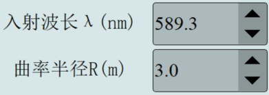
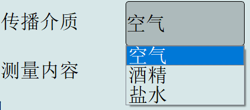
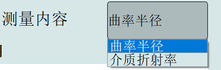

步骤一：把界面中心的横轴调节到最中间的位置。如果在实验记录过程中记录错误，可以点击右侧的“清除数据”来删除记录的数据。当所有数据记录完成后，
步骤二：把横轴调到40环的位置。
步骤三：点击右侧“写入数据”记录下当时的数据，以此类推，把横轴向左移动，记录到21环。之后把横轴向右移动，点击“写入数据”可以从21环开始计数，直到40环。如果在实验记录过程中记录错误，可以点击右侧的“清除数据”来删除记录的数据。也可以通过根据主尺，副尺手动写入数据。
步骤四：点击“开始计算”，右侧将会自动显示直径，并且在右下方展示出结果。
注：通过点击“原理演示”显示实验原理
可以通过调节入射波长、曲率半径来改变实验参数

可以选择传播介质

也可以选择测量内容
